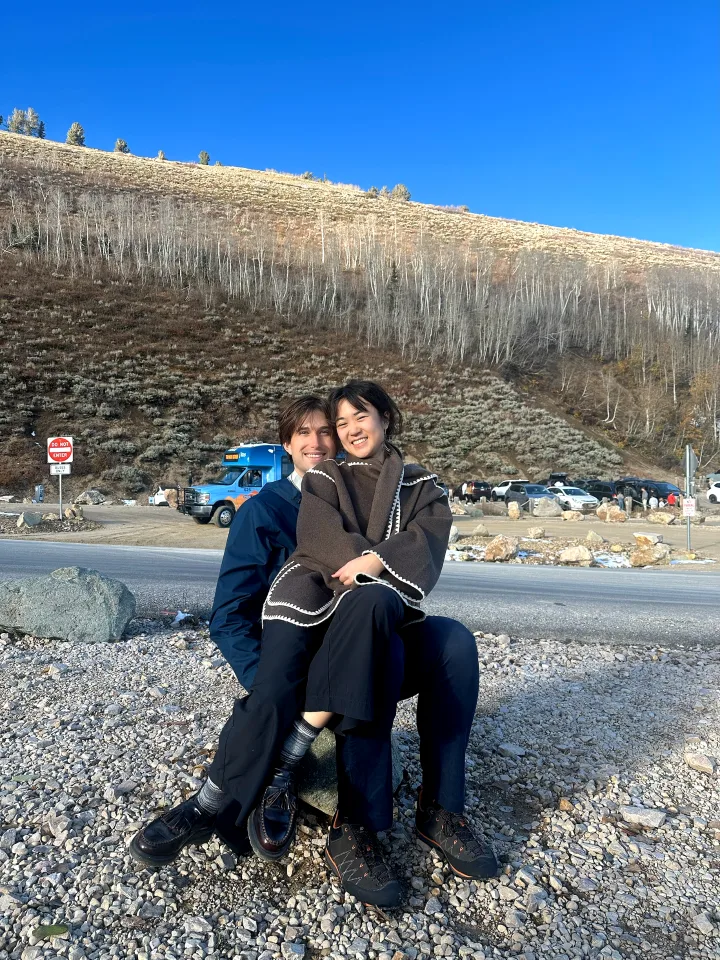
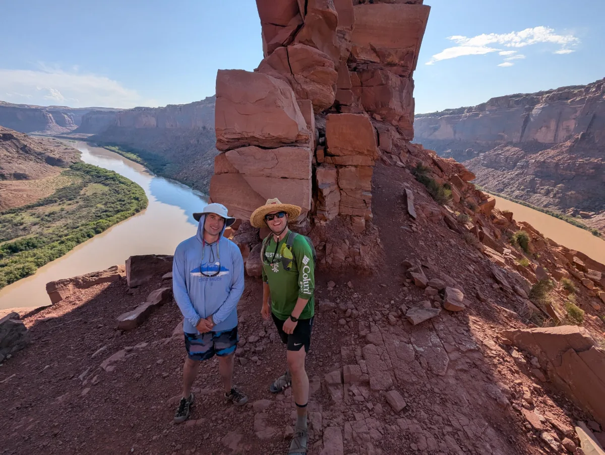

Hi, I'm Logan.
I'm a senior in the Honors Information Systems program at the University of Utah's David Eccles School of Business, graduating in May 2027. Most of my work comes down to getting systems to work and explaining them to the people who use them.

Where I'm from
I was born near Moab and grew up in Salt Lake City. I went to Tenth East Montessori, then the Academy for Math, Engineering & Science (AMES) for high school, and stayed in Salt Lake for college.
What I'm working on
At BKP Dental I run on-site IT for a 20+ person practice, from the EagleSoft server to 40+ connected devices, and explain each fix to staff who aren't technical. As a teaching assistant for Principles of Finance I break topics like bond valuation into steps for 550+ students, and as a peer advisor I help business students plan their path to graduation.
My honors thesis is about agentic AI: an automated Python and R pipeline that uses language models to clean and classify messy financial data.
Outside of work
In winter I'm skiing at Alta and Snowbird, usually more than 40 days a season. The rest of the year I'm bouldering at the Front, riding trails on my Privateer 141, or out with my dog, Luna. I've traveled to Japan, France and Vietnam, and I listen to a lot of melodic house, like Lane 8 and Tinlicker.
I also like giving back outdoors. I've led Tree Utah planting crews since 2022, and I coordinate volunteers for Joe's Valley Fest, a bouldering festival in Castle Dale.


A few fun facts
- I was born just outside Canyonlands National Park, near Island in the Sky.
- I've loved roller coasters since I was a kid, and I still can't fully explain why.
- I love trains, especially high-speed rail, and I'm hoping America gets real high-speed trains soon.